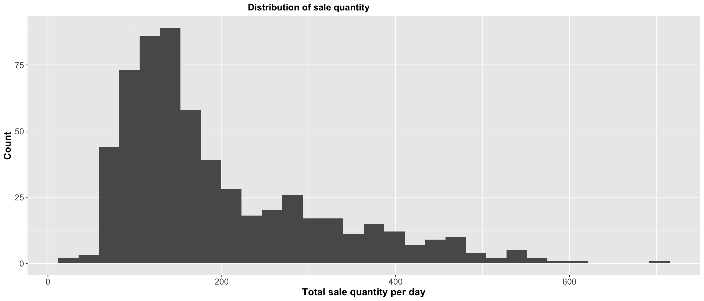
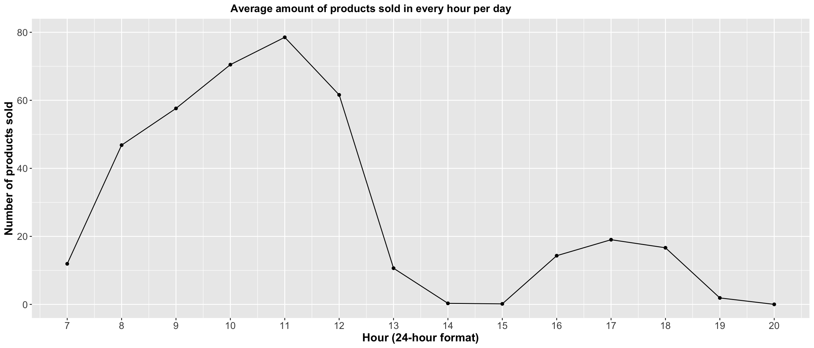
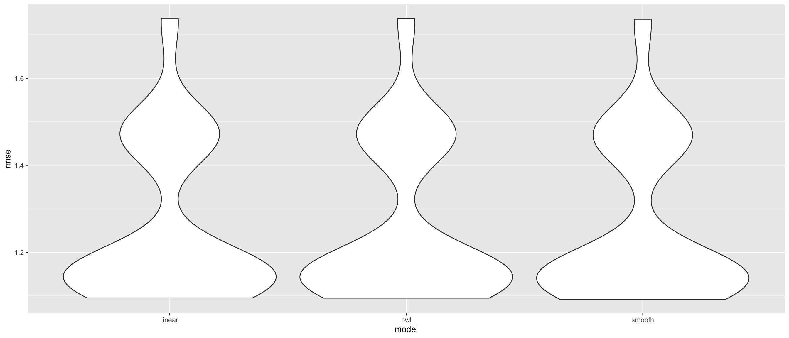

Statistical Analyses
knitr::opts_chunk$set(
message = FALSE,
warning = FALSE,
fig.width = 14,
fig.height = 6,
out.width = "90%",
set.seed(8))
library(tidyverse)
library(lubridate)
library(plotly)
library(mgcv)
library(moments)
library(modelr)In this section, we will perform several statistical analysis in this bakery including ANOVA to check the mean difference of peak sale months between 2021 and 2022, One-Sample t-test to check the mean price of baguette with average price of it in the nation, Simple Linear Regression to test the linear relationship between quantity of sale and hours in the day, and finally Multiple Linear Regression to see additional predictors.
Summary of packages
tidyverse, lubridate, plotly, mgcv, moments, modelr
# Data input and cleaning
bakery_df =
read_csv("./Data/Bakery_sales.csv") %>%
janitor::clean_names() %>%
mutate(
unit_price = str_replace(unit_price, "€", ""),
unit_price = str_replace(unit_price, ",", "."),
unit_price = as.numeric(unit_price),
product_name = article,
rev = quantity * unit_price
) %>%
filter(product_name != ".") %>%
select(-article)
ANOVA
ANOVA tests whether there is a difference in means of the groups at each level (each individual month) of the independent variable of peak months (Jun - Sep).
One way anova test can test if the mean sales of peak months (Jun - Sep) in 2021 is different from the mean sales of peak months (Jun - Sep) in 2022.
Our data contains 7 variables and 234000 observations, and we can assume the large sample size being normally distributed by central limit theorem. (The central limit theorem (CLT) states that the distribution of sample means approximates a normal distribution as the sample size gets larger(n>30), regardless of the population’s distribution.)
The null hypothesis is that there is no difference in the mean sales
of peak months in 2021 and 2022.
The alternative hypothesis is that the means are different from one
another.
anova_df =
bakery_df %>%
mutate(
year = year(date),
month = month(date)
)
one_sales =
anova_df %>%
filter((month == 6)|(month == 7)|(month == 8)|(month == 9)) %>%
filter(year == 2021) %>%
group_by(year, month) %>%
summarize(one_sales = n()) %>%
group_by(year, month) %>%
mutate(ID = cur_group_id())
two_sales =
anova_df %>%
filter((month == 6)|(month == 7)|(month == 8)|(month == 9)) %>%
filter(year == 2022) %>%
group_by(year, month) %>%
summarize(two_sales = n()) %>%
group_by(year, month) %>%
mutate(ID = cur_group_id())
anova_test_df =
left_join(one_sales, two_sales, by = c("ID"))
one.way <- aov(one_sales ~ two_sales, data = anova_test_df) %>%
broom::tidy() %>%
knitr::kable(digits = 2)
one.way| term | df | sumsq | meansq | statistic | p.value |
|---|---|---|---|---|---|
| two_sales | 1 | 74405982.9 | 74405982.9 | 196.63 | 0.01 |
| Residuals | 2 | 756817.1 | 378408.5 | NA | NA |
The ANOVA test p-value is 0.01 which is less than alpha level of 0.05, so we reject the null hypothesis and conclude that the mean sales of peak months in 2021 is statistically significantly different from the mean sales of peak months in 2022.
One-sample T-test
Regular Baguette (Two-sided)
We are interested in testing if the mean price of
BAGUETTE in this bakery is significantly different from the
average price for a baguette in Paris, which is 1.07 euros.
Null hypothesis: The mean price of baguette in this bakery is the same as the average price of baguette in Paris.
Alternative hypothesis: The mean price of baguette in this bakery is different from the average price of baguette in Paris.
Our population follows a Poisson distribution as shown below, and we can assume the large sample size being normally distributed by central limit theorem.
bakery_df %>%
filter(product_name == "TRADITIONAL BAGUETTE") %>%
group_by(date) %>%
summarize(total_sale = sum(quantity)) %>%
ggplot(aes(x = total_sale)) +
geom_histogram()
baguette_onet =
bakery_df %>%
filter(product_name == "BAGUETTE") %>%
select(unit_price)
baguette_t_results =
t.test(baguette_onet, mu = 1.07 , alternative = "two.sided") %>%
broom::tidy()
baguette_t_results %>%
knitr::kable(digits = 4)| estimate | statistic | p.value | parameter | conf.low | conf.high | method | alternative |
|---|---|---|---|---|---|---|---|
| 0.9291 | -442.2184 | 0 | 15291 | 0.9285 | 0.9297 | One Sample t-test | two.sided |
The p-value is much smaller than the alpha (0.05), so we would reject the null hypothesis. At 5% level of significance, we have sufficient evidence to conclude that the mean price of baguette in this bakery is significantly different from the average price of baguette in Paris.
Traditional Baguette (One-sided)
We noticed that the price of traditional baguette in this bakery is higher than the average price of traditional baguette in France. The price of the traditional French loaf is around 0.90 Euros in bakeries. Therefore, we would like to conduct a one-sided T-test to see if the price difference is significant.
Null hypothesis: The mean price of traditional baguette in this bakery is the same as the average price of traditional baguette in France.
Alternative hypothesis: The mean price of traditional baguette in this bakery is higher than the average price of traditional baguette in France.
bakery_df %>%
filter(product_name == "TRADITIONAL BAGUETTE") %>%
count(unit_price) %>%
knitr::kable(digits = 4)| unit_price | n |
|---|---|
| 1.20 | 39426 |
| 1.25 | 13059 |
| 1.30 | 15204 |
trad_baguette_onet =
bakery_df %>%
filter(product_name == "TRADITIONAL BAGUETTE") %>%
select(unit_price)
trad_baguette_t_results =
t.test(trad_baguette_onet, mu = 0.90, alternative = "greater") %>%
broom::tidy()
trad_baguette_t_results %>%
knitr::kable(digits = 4)| estimate | statistic | p.value | parameter | conf.low | conf.high | method | alternative |
|---|---|---|---|---|---|---|---|
| 1.2321 | 2097.119 | 0 | 67688 | 1.2318 | Inf | One Sample t-test | greater |
The p-value is much smaller than the alpha (0.05), so we would reject the null hypothesis. At 5% level of significance, we have sufficient evidence to conclude that the mean price of traditional baguette in this bakery is significantly higher than the average price of baguette in Paris.
Simple Linear Regression
We conduct a simple linear regression for CROISSANT’s
sale counts and when it’s being sold (hour of the day) and test the
model using Cross Validation.

Find the rush hours of a typical day:
bakery_df =
bakery_df %>%
mutate(
Hour = hour(time),
Month = month(date))
bakery_df %>%
group_by(Hour) %>%
count() %>%
ggplot(aes(x = Hour, y = n)) +
geom_point() +
geom_line() +
scale_x_continuous(breaks = seq(7, 20), limit = c(7, 20)) +
scale_y_continuous(limit = c(0,50000)) +
labs(
title = "Peak hours",
x = "Hour (24-hour format)",
y = "Number of times appeared")
Overall, what hours has the most number of products sold?
Then we only take a look at the morning hours with a monotonic function from 7 AM to 11 AM.
bakery_df %>%
mutate(year = year(date)) %>%
filter(year == 2021) %>%
group_by(Hour) %>%
summarize(
n_sold = sum(quantity) / 365) %>%
ggplot(aes(x = Hour, y = n_sold)) +
geom_point() +
geom_line() +
scale_x_continuous(breaks = seq(7, 11), limit = c(7, 11)) +
scale_y_continuous(limit = c(0,120)) +
labs(
title = "Peak hours",
x = "Hour (24-hour format)",
y = "Number of products sold")It looks like a monotonic linear relationship that we can take a further look at using simple linear regression model.
slr_df =
bakery_df %>%
mutate(
hour_cp = (Hour > 8) * (Hour - 8))
slr_reg = lm(quantity ~ Hour, slr_df)
slr_reg %>%
broom::tidy() %>%
knitr::kable(digits = 2) | term | estimate | std.error | statistic | p.value |
|---|---|---|---|---|
| (Intercept) | 1.99 | 0.01 | 182.09 | 0 |
| Hour | -0.04 | 0.00 | -42.57 | 0 |
The model is Sale count = 1.99 - 0.04 * Hour
Cross validation
# created 3 models: linear, piecewise, and smooth models
linear_mod = lm(quantity ~ Hour, slr_df)
pwl_mod = lm(quantity ~ Hour + hour_cp, data = slr_df)
smooth_mod = gam(quantity ~ s(Hour), data = slr_df)slr_df %>%
gather_predictions(linear_mod, pwl_mod, smooth_mod) %>%
mutate(model = fct_inorder(model)) %>%
ggplot(aes(x = Hour, y = quantity)) +
geom_point(alpha = .5, size = 0.05) +
geom_line(aes(y = pred), color = "red") +
ylim(1, 2) +
facet_grid(~model)
The three models with original scales are very similar. Therefore, when we visualize the three models, we change the y-axis scale to 0-3 as a zoom-in function in order to see the nuance differences between each model.
Re-sample the dataset by crossv_mc and let’s see the
rmse of each model and make a table
# created a train model and test model; check rmse
set.seed(2022)
cv_df =
crossv_mc(slr_df, 100) %>%
mutate(
train = map(train, as_tibble),
test = map(test, as_tibble))
cv_df =
cv_df %>%
mutate(
linear_mod = map(train, ~lm(quantity ~ Hour, data = .x)),
pwl_mod = map(train, ~lm(quantity ~ Hour + hour_cp, data = .x)),
smooth_mod = map(train, ~gam(quantity ~ s(Hour), data = as_tibble(.x)))) %>%
mutate(
rmse_linear = map2_dbl(linear_mod, test, ~rmse(model = .x, data = .y)),
rmse_pwl = map2_dbl(pwl_mod, test, ~rmse(model = .x, data = .y)),
rmse_smooth = map2_dbl(smooth_mod, test, ~rmse(model = .x, data = .y)))
cv_df %>%
select(rmse_linear, rmse_pwl, rmse_smooth) %>%
pivot_longer(
everything(),
names_to = "model",
values_to = "rmse",
names_prefix = "rmse_") %>%
group_by(model) %>%
summarize(mean(rmse)) %>%
mutate(mean_rmse = `mean(rmse)`) %>%
select(-`mean(rmse)`) %>%
knitr::kable(digits = 4)| model | mean_rmse |
|---|---|
| linear | 1.2719 |
| pwl | 1.2715 |
| smooth | 1.2688 |
Then plot the rmse graph
cv_df %>%
select(starts_with("rmse")) %>%
pivot_longer(
everything(),
names_to = "model",
values_to = "rmse",
names_prefix = "rmse_") %>%
mutate(model = fct_inorder(model)) %>%
ggplot(aes(x = model, y = rmse)) + geom_violin() From the visualization graphs of three rmse models, it is hard to determine the slightly change of each model, but from our mean rmse table we conclude that the smooth model is the best out of the three with the least mean rmse (1.2688).
Based on the results, there is a slightly improvement using smooth model as it has the lowest rmse, we can conclude that the smooth model is to be accounted for this relationship in the product of croissant.
Multiple Linear Regression
We are interested in testing the relationship between the revenue
(outcome variable) and 2 main predictors, which are unit price of a
product and its quantity being sold. Considering that the sales of
bakery varies by month, we included month in our model as a
confounder to be controlled.
Multivariable linear regression model
baguette_df =
bakery_df %>%
filter(str_detect(product_name, "BAGUETTE")) %>%
mutate(
month = month(date)
)
baguette_reg = lm(rev ~ unit_price + quantity + month, baguette_df)
baguette_reg %>%
broom::tidy() %>%
knitr::kable(digits = 4)| term | estimate | std.error | statistic | p.value |
|---|---|---|---|---|
| (Intercept) | -1.4321 | 0.0038 | -374.6061 | 0 |
| unit_price | 1.2071 | 0.0031 | 393.5209 | 0 |
| quantity | 1.1881 | 0.0005 | 2603.5416 | 0 |
| month | 0.0012 | 0.0002 | 6.1995 | 0 |
Examine assumptions for the chosen Linear Regression model
par(mfrow = c(2, 2))
plot(baguette_reg)
According to the assumption check graph, the normal qq plot is approximately closed to the predicted line with residuals on both sides, but the residual plots might violate some of the linear regression assumptions (homoscedasticity).
The tentative model for multiple linear regression of baguette’s
revenue is
Revenue = -1.43 + 1.21 * unit_price + 1.19 * quantity + 0.001 *
month
We might not consider doing MLR for the sake of this research due to the unmet assumptions.